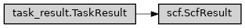

ScfResult
- class ase2sprkkr.outputs.readers.scf.ScfResult(input_parameters, calculator, directory, result, error, return_code, output_file=None, input_file=None)[source]
Objects of this class holds the results of computed SCF class
Class hierarchy
Constructor
- __init__(input_parameters, calculator, directory, result, error, return_code, output_file=None, input_file=None)
- property iterations
Array of the results of iterations
- property potential_filename
New (output) potential file name
- property potential
The new (output) potential - that contains the converged charge density etc.
- property calculator
The calculator that has the new (output) potential assigned - i.e. that can be used for further calculations with the (hopefully) converged wavefunctions etc.
- property energy
Total energy of the last iteration
- property converged
The calculation coverged or not?
- iteration_values(name)[source]
Return the array of values of given name from the iterations (i.e. “the column of the table of the values”)
E.g. result.iteration_values(‘ETOT’) return list of floats - the total energies computed in each iteration.
- Parameters
name (str) – Name of the parameter
- Returns
values – The values.
- Return type
list
- property last_iteration
Return the data of the last iteration
- property energies
- plot(what=['error', ('energy', 'ETOT'), ('energy', 'EMIN')], filename=None, logscale={'err'}, **kwargs)[source]
Plot the development of the given value(s) during iterations.
- Parameters
what (list[str]) – Names to be plotted
filename (str or None) – If filename is given, the plot is rendered to the file, it is show on the screen otherwise.
logscale (collections.abc.Set[str]) – Which values should be rendered in logscale
**kwargs (dict) – All other arguments are passed to the matplotlib Axes.plot function